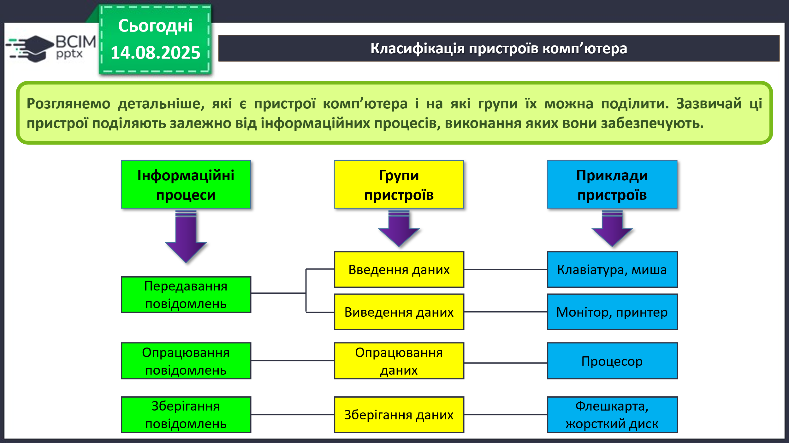
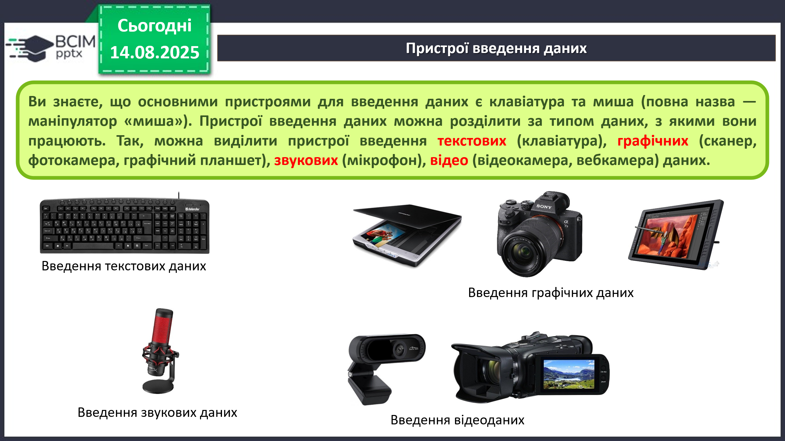
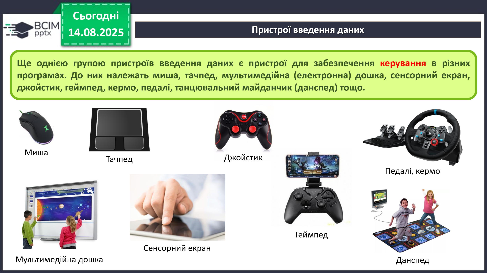
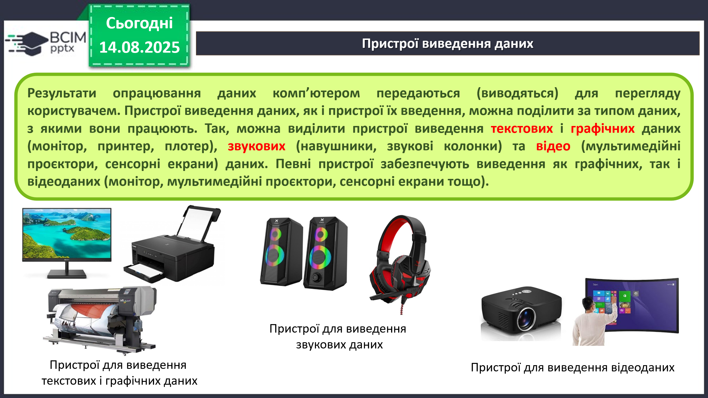
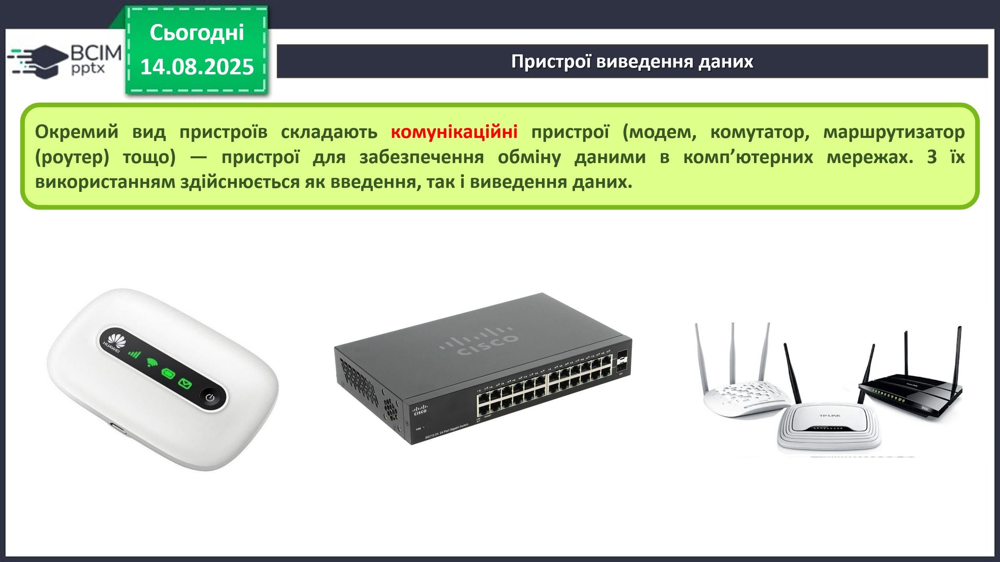
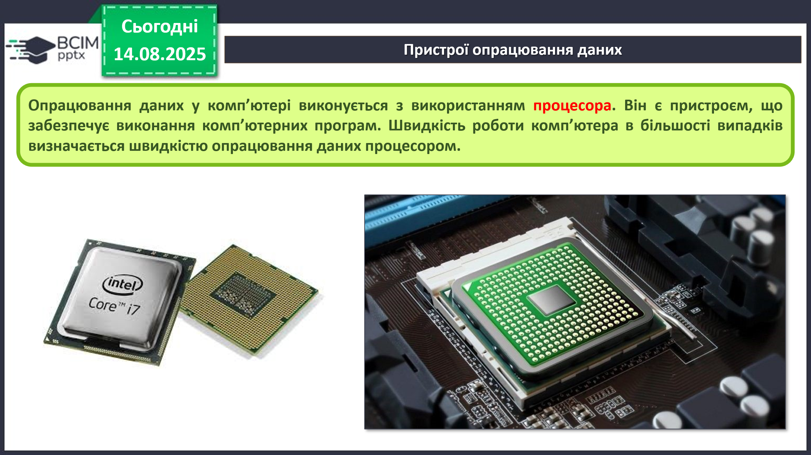
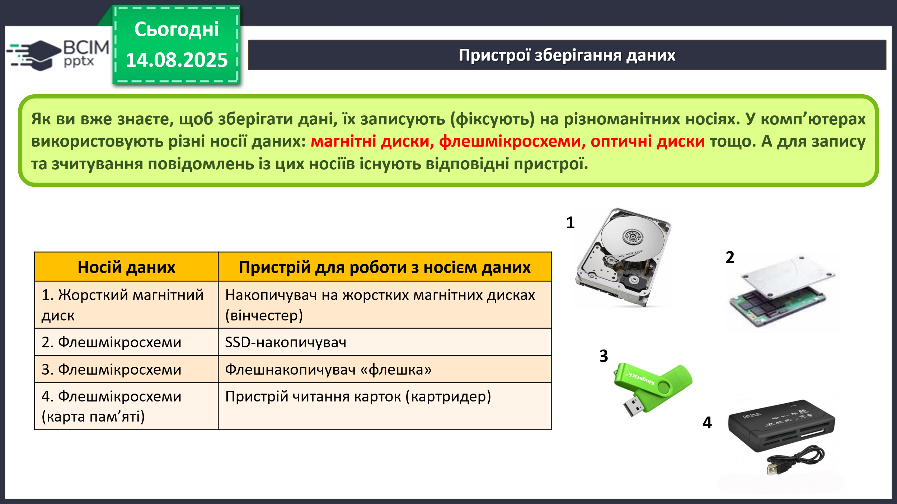
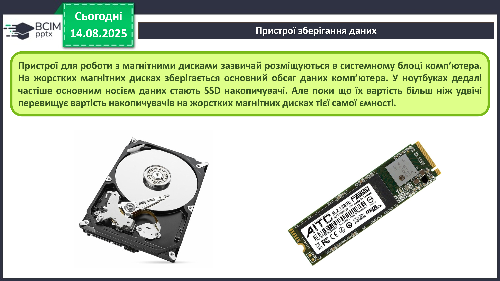

HUB 56 · 5 клас · Урок №7
Складові комп’ютера та їх призначення
Класифікація пристроїв за інформаційними процесами.
Класифікація пристроїв
Пристрої комп’ютера поділяють залежно від інформаційного процесу, який вони забезпечують: введення, виведення, опрацювання або зберігання даних.

Пристрої введення даних
Пристрої введення передають дані до комп’ютера. Їх можна поділити за типом даних:
- текстові — клавіатура;
- графічні — сканер, фотокамера, графічний планшет;
- звукові — мікрофон;
- відеодані — відеокамера, вебкамера.

Для керування в програмах використовують мишу, тачпед, мультимедійну дошку, сенсорний екран, джойстик, геймпед, кермо, педалі та інші пристрої.

Сенсорний екран одночасно виводить зображення і сприймає дотик, тому є пристроєм введення та виведення.
Пристрої виведення даних
Пристрої виведення передають результати опрацювання користувачеві:
- текстові й графічні дані — монітор, принтер, плотер;
- звукові дані — навушники, колонки;
- відеодані — проєктор, монітор, сенсорний екран.

Комунікаційні пристрої — модем, комутатор і маршрутизатор — забезпечують обмін даними в мережах та здійснюють і введення, і виведення.

Опрацювання даних
Процесор опрацьовує дані та виконує команди комп’ютерних програм. Швидкість роботи комп’ютера значною мірою залежить від швидкості роботи процесора.

Зберігання даних
Дані записують на магнітні диски, флешмікросхеми, оптичні диски та інші носії. Сукупність носіїв даних комп’ютера складає його пам’ять.
SSD — накопичувач на основі мікросхем пам’яті. Картридер — пристрій для зчитування даних із карт пам’яті.

У системних блоках часто використовують жорсткі диски, а в ноутбуках — SSD. Для перенесення даних застосовують флешнакопичувачі й карти пам’яті.

Основна властивість носія — ємність, тобто кількість даних, які можна на ньому зберегти. Її вимірюють у гігабайтах і терабайтах.